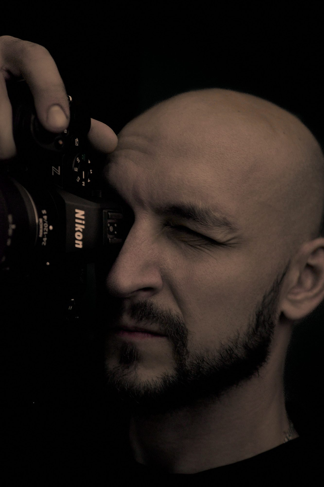
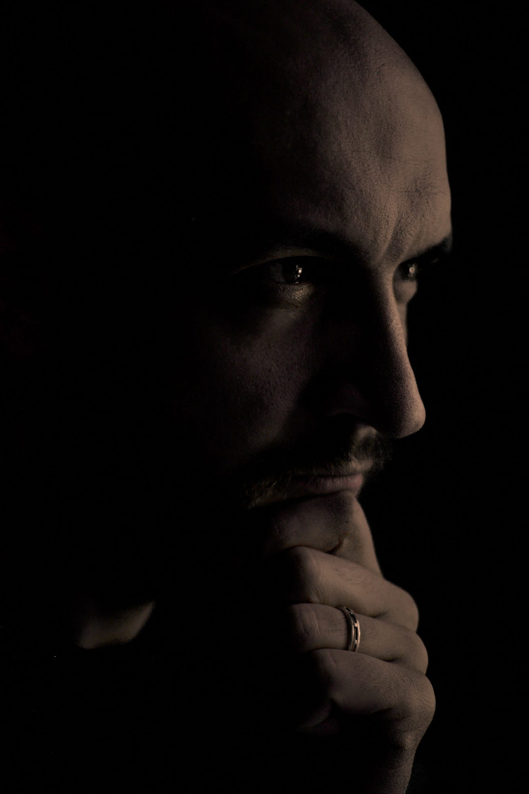

Fotograf reportażowy z Siedlec. Chrzciny, komunie, sesje rodzinne i śluby w naturalnym świetle – bez pozowania, za to z prawdziwymi emocjami.

Cześć, mam na imię Jakub. Jestem fotografem reportażowym, który stawia na naturalność i autentyczne emocje. Najbardziej cenię chwile, których nie da się powtórzyć – spojrzenia, gesty i uśmiechy pojawiające się spontanicznie.
Fotografuję chrzciny, komunie oraz sesje rodzinne, narzeczeńskie, ciążowe i noworodkowe, a także reportaże ślubne. Pracuję w świetle zastanym: zamiast ustawiania i pozowania wolę obserwować i dokumentować wydarzenia takimi, jakie są naprawdę.
Ukończyłem kurs liturgiczny, więc znam zasady pracy w świątyni i potrafię dyskretnie dokumentować uroczystości religijne.

Podczas fotografowania staram się być niewidocznym obserwatorem. Nie ingeruję w przebieg wydarzeń bardziej niż to konieczne. Dzięki temu powstają kadry pełne naturalnych emocji i prawdziwych relacji między ludźmi.
Wybrane fotografie z reportaży i sesji. Kliknij zdjęcie, aby je powiększyć.
Fotografuję ważne momenty życia w naturalnym świetle. Reportaże z chrzcin są dostępne już od 400 zł, a indywidualne sesje zdjęciowe już od 200 zł. Ostateczną cenę dopasowuję do zakresu i terminu, więc napisz lub zadzwoń, a wspólnie ustalimy opcję, która najlepiej odpowiada Twoim potrzebom.
Reportaż z uroczystości chrztu świętego i rodzinnego przyjęcia.
Zapytaj o wycenęReportaż z Pierwszej Komunii Świętej: kościół, rodzina, przyjęcie.
Zapytaj o wycenęReportaż od przygotowań, przez ceremonię i życzenia, po wesele. Naturalne kadry i prawdziwe emocje.
Zapytaj o wycenęReportaż z urodzin, jubileuszy i rodzinnych przyjęć: toasty, taniec, zabawa i spontaniczne chwile gości, od powitania po tort.
Zapytaj o wycenęSpontaniczne sesje w plenerze lub w domu, w Siedlcach, Warszawie i na Mazowszu. Prawdziwe relacje i zabawa zamiast pozowania.
Zapytaj o wycenęPierwsze dni życia dziecka bez sztucznych aranżacji: więź rodziców z maluszkiem i rodzinne chwile.
Zapytaj o wycenęSubtelne zdjęcia w plenerze lub w domowym zaciszu, pełne radości oczekiwania.
Zapytaj o wycenęSwobodna sesja dla par przed ślubem: okazja, by oswoić się z aparatem i poznać mój styl pracy.
Zapytaj o wycenęNie wiesz, którą opcję wybrać? Skontaktuj się ze mną, a razem dobierzemy zakres do Twojej uroczystości i oczekiwań.
Prosty i przejrzysty proces pomaga spokojnie przygotować się do sesji lub reportażu. Na każdym etapie możesz liczyć na moje wsparcie.
Napisz lub zadzwoń. Ustalamy termin, zakres reportażu i Twoje oczekiwania.
Potwierdzamy szczegóły współpracy i rezerwuję dla Ciebie datę w kalendarzu.
W dniu wydarzenia pracuję dyskretnie, a po selekcji i obróbce przekazuję gotowy materiał.
„Pełen profesjonalizm, bardzo dobry kontakt i super atmosfera podczas sesji. Zdjęcia przepiękne, naturalne. Czas realizacji szybki. Polecam.”
„Polecam z całego serca! Pełen profesjonalizm od pierwszego kontaktu aż po oddanie zdjęć. Podczas sesji panowała swobodna i miła atmosfera, dzięki czemu zdjęcia wyszły naturalnie i pięknie. Kuba ma świetne wyczucie kadru, dba o każdy detal i potrafi uchwycić wyjątkowe emocje. Efekt końcowy przerósł moje oczekiwania – zdjęcia są przepiękne i będą wspaniałą pamiątką na lata. Zdecydowanie polecam każdemu, kto szuka utalentowanego i zaangażowanego fotografa!”
„Jestem bardzo zadowolona z efektów sesji! Fotograf ma świetne wyczucie, potrafi uchwycić najpiękniejsze chwile i sprawić, że zdjęcia wyglądają wyjątkowo. Współpraca przebiegła bezproblemowo, a gotowe fotografie otrzymałam szybko. Zdecydowanie polecam każdemu, kto szuka profesjonalnego fotografa!”
Tak. Realizuję reportaże ślubne i wesela. Najlepiej poznać mój styl pracy podczas sesji narzeczeńskiej, którą chętnie wykonam przed ślubem.
Tak. Wykonuję reportaże i sesje również w Warszawie, Mińsku Mazowieckim, Łukowie, Sokołowie Podlaskim oraz na terenie województw mazowieckiego, lubelskiego i podlaskiego.
Tak. Ukończyłem kurs liturgiczny uprawniający do fotografowania podczas uroczystości kościelnych.
Po kontakcie ustalamy szczegóły wydarzenia lub sesji. Następnie rezerwuję termin, wykonuję reportaż, a po selekcji i obróbce przekazuję gotowe zdjęcia w uzgodnionej formie.
Tak. Realizuję sesje rodzinne, narzeczeńskie, ciążowe i noworodkowe zarówno w plenerze, jak i w domowym zaciszu.
Reportaże z chrzcin są dostępne już od 400 zł, a indywidualne sesje zdjęciowe już od 200 zł. Cena zależy od rodzaju wydarzenia, czasu pracy i zakresu, dlatego napisz lub zadzwoń, a wspólnie ustalimy opcję dopasowaną do Twoich potrzeb.
Tak. Realizuję reportaże z urodzin, jubileuszy i innych uroczystości rodzinnych: toasty, taniec, zabawa i spontaniczne chwile gości.
Najprościej skontaktować się telefonicznie lub mailowo. Odpowiem na pytania i sprawdzę dostępność terminu.
Jeśli szukasz fotografa, który uchwyci ważne chwile w naturalny i dyskretny sposób, zapraszam do kontaktu. Chętnie odpowiem na pytania i przedstawię szczegóły współpracy.